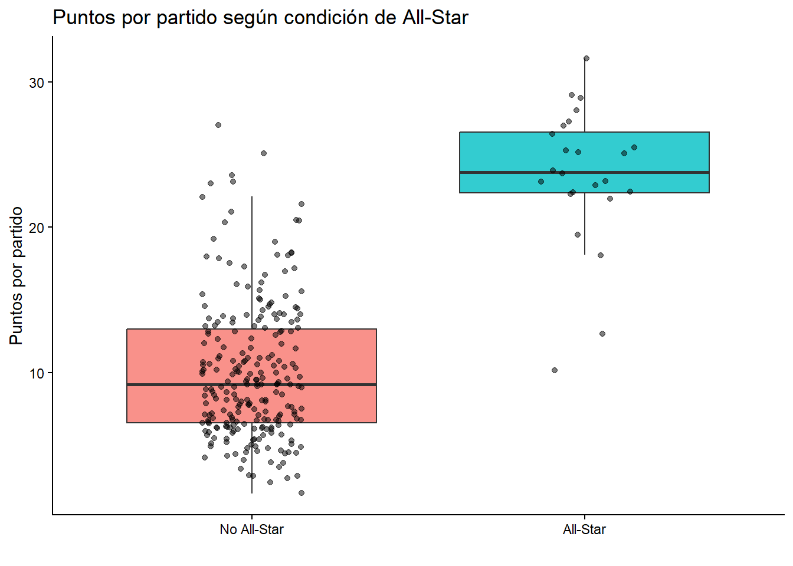
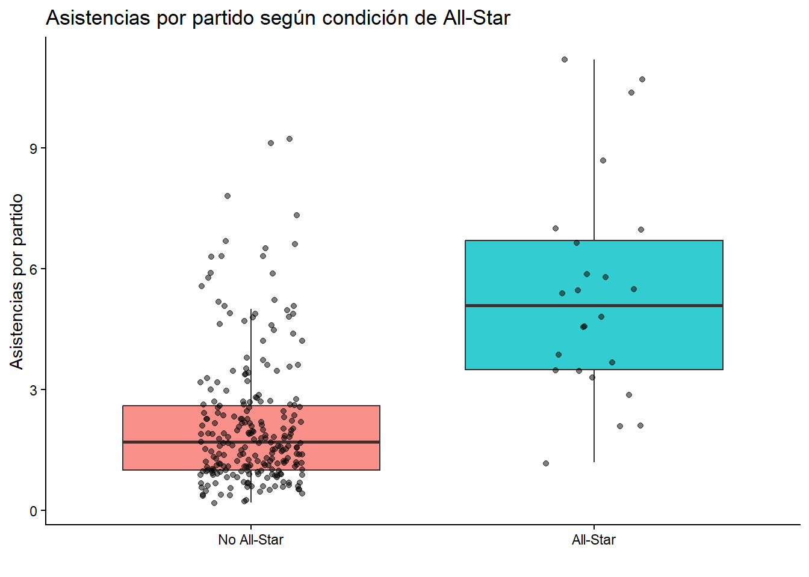
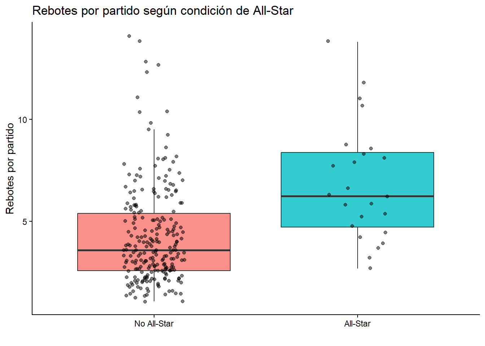
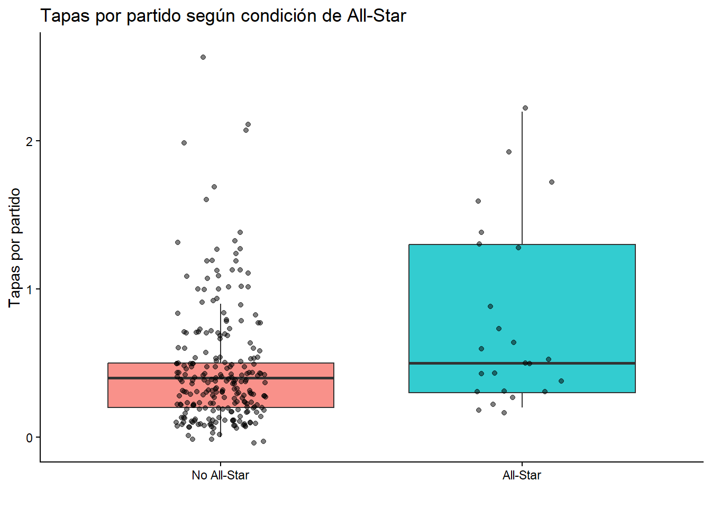
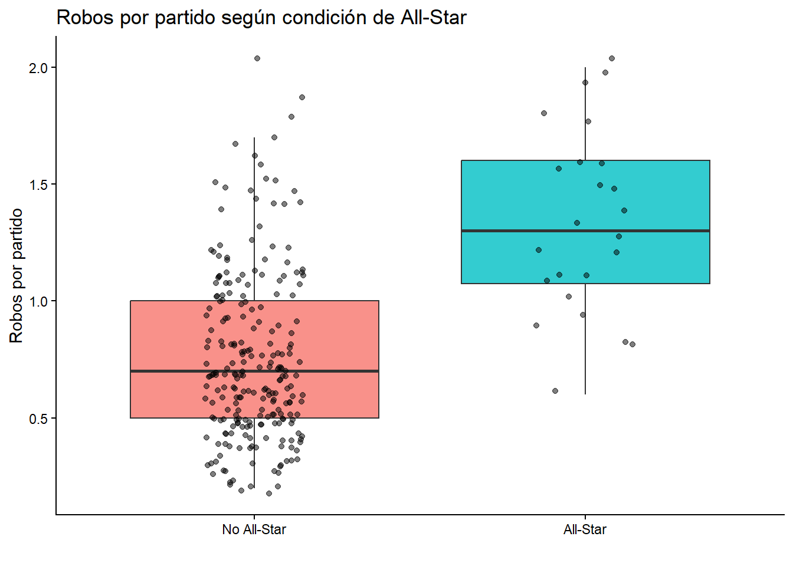
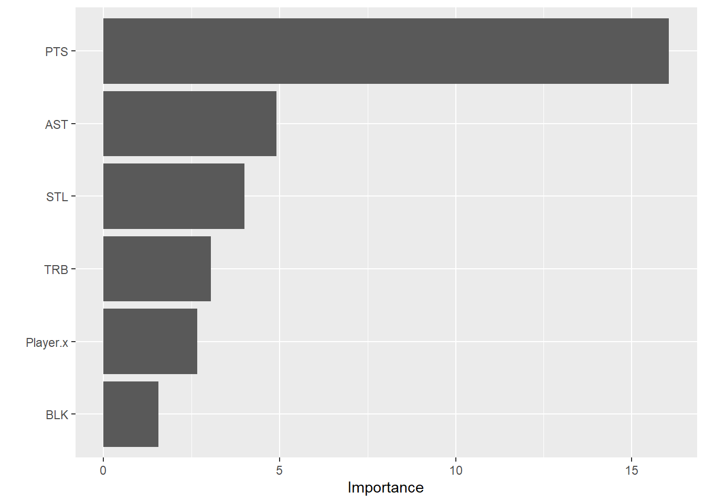

#Librerías a utilizar
library(tidyverse)
library(tidymodels)
library(ggplot2)
library(rpart)
library(rpart.plot)
library(plotly)
library(knitr)
library(gt)
library(dplyr)
library(purrr)
library(vip)Trabajo final
1 - Introducción
La NBA es la mejor liga de basket del mundo y en lo que ha sido su evolución a lo largo de la historia las estadísticas han jugado un papel muy importante. A día de hoy las estadísticas son el principal sustento a la hora de tomar decisiones deportivas, buscando maximizar la eficiencia y sacar el máximo provecho de cada jugada. Para esto se hace un relevamiento de cada estadística, desde las más básicas, como puede ser el conteo de puntos, asistencias y rebotes, hasta las más avanzadas, que pueden incluir cálculos matemáticos bastante complejos.
Uno de los grandes momentos de cada temporada de la NBA es juego de las estrellas (All Star Game), un partido que se realiza poco después de la mitad de la temporada donde los jugadores que están teniendo una actuación destacada en la temporada son seleccionados para jugar un partido entre ellos. Esto significa un gran logro para cualquier jugador, algunos ya son habituales en este tipo de partidos, otros son seleccionados para este partido unas pocas veces en su carrera y la gran mayoría jamás llegan a jugar uno. La selección de los jugadores que participan del All Star no es sencilla y se hace a través de cuatro ramas que votan a quienes consideran los mejores: el público, los jugadores y un grupo de periodistas especializados seleccionan a los 5 titulares de cada conferencia, mientras que los siete suplentes de cada equipo son elegidos por votación de todos los entrenadores de la liga.
Con este trabajo estudiaremos la relación entre algunas estadísticas individuales y la selección de un jugador para el All Star a través de un modelo de clasificación que permita asignarle a un jugador una probabilidad de ser seleccionado al All Star según sus estadísticas de la temporada. ¿Existe una combinación de estadísticas que permita explicar la selección de un jugador al All Star o influyen otros factores que no tienen que ver con los datos?
Para responder esta pregunta se realizaremos un análisis exploratorio de los datos, se entrenará un modelo de Random Forest para clasificar jugadores como All-Star o No All-Star y se desarrollará una aplicación Shiny que permita estimar dicha probabilidad de forma interactiva.
2 - Carga de datos
La base de datos se descargó desde la web de Open ML, desde el siguiente link: https://www.openml.org/search?type=data&status=active&id=43653. Si bien el archivo original es de tipo ARFF, se convirtió a formato CSV para facilitar su manipulación en R.
datos <- read_csv("data/nba_players.csv")#Estructura de los datos
tibble(
Variable = names(datos),
Tipo = sapply(datos, class),
Ejemplo = map_chr(datos, ~ paste(head(unique(.x), 3),
collapse = ", "))) %>%
gt()| Variable | Tipo | Ejemplo |
|---|---|---|
| Rk | numeric | 170, 58, 157 |
| Player.x | character | A.J. Hammons, Aaron Brooks, Aaron Gordon |
| Player_ID | character | hammoaj01, brookaa01, gordoaa01 |
| Pos1 | character | C, PG, SF |
| Pos2 | character | ?, C, SG |
| Age | numeric | 24, 32, 21 |
| Tm | character | DAL, IND, ORL |
| G | numeric | 22, 65, 80 |
| GS | numeric | 0, 72, 25 |
| MP | numeric | 7.4, 13.8, 28.7 |
| FG | numeric | 0.8, 1.9, 4.9 |
| FGA | numeric | 1.9, 4.6, 10.8 |
| FG. | character | 0.405, 0.40299999999999997, 0.45399999999999996 |
| X3P | numeric | 0.2, 0.7, 1 |
| X3PA | numeric | 0.5, 2, 3.3 |
| X3P. | character | 0.5, 0.375, 0.28800000000000003 |
| X2P | numeric | 0.5, 1.1, 4 |
| X2PA | numeric | 1.5, 2.6, 7.5 |
| X2P. | character | 0.375, 0.424, 0.528 |
| eFG. | character | 0.46399999999999997, 0.483, 0.499 |
| FT | numeric | 0.4, 0.5, 2 |
| FTA | numeric | 0.9, 0.6, 2.7 |
| FT. | character | 0.45, 0.8, 0.7190000000000001 |
| ORB | numeric | 0.4, 0.3, 1.5 |
| DRB | numeric | 1.3, 0.8, 3.6 |
| TRB | numeric | 1.6, 1.1, 5.1 |
| AST | numeric | 0.2, 1.9, 0.4 |
| STL | numeric | 0, 0.4, 0.8 |
| BLK | numeric | 0.6, 0.1, 0.5 |
| TOV | numeric | 0.5, 1, 1.1 |
| PF | numeric | 1, 1.4, 2.2 |
| PTS | numeric | 2.2, 5, 12.7 |
| Salary | character | ?, 2700000.0, 4351320.0 |
| mean_views | character | 3.32, 11.155737704918002, 1713.98633879781 |
| Season | character | 2016-17, 2017-18, 2018-19 |
| Conference | character | West, Est |
| Role | character | Front, Back |
| Fvot | numeric | 786, 2474, 22774 |
| FRank | numeric | 123, 64, 29 |
| Pvot | character | ?, 1.0, 7.0 |
| PRank | character | ?, 52.0, 23.0 |
| Mvot | character | ?, 2.0, 1.0 |
| MRank | character | ?, 6.0, 8.0 |
| Score | numeric | 83.5, 48.2, 40 |
| Play | character | No, Yes |
El dataset cuenta con 45 variables y 1408 observaciones, donde cada observación representa el rendimiento de un jugador en temporada determinada, por lo que cada jugador puede aparecer hasta tres veces en el dataset. A continuación se explican las variables más relevantes:
| Variable | Descripción |
|---|---|
| Player.x | Nombre del jugador |
| Pos1 | Posición |
| G | Partidos jugados |
| MP | Minutos por partido |
| TRB | Rebotes por partido |
| AST | Asistencias por partido |
| STL | Robos por partido |
| BLK | Tapones por partido |
| PTS | Puntos por partido |
| Play | Indica si el jugador fue All-Star |
| Season | Temporada |
3 - Análisis exploratorio de los datos.
Para realizar el análisis exploratorio solo usaremos los datos de la temporada 2016-17 para evitar repetir observaciones de un mismo jugador que pueden ser muy similares entre una temporada y otra. También excluiremos a los jugadores que hayan jugado menos de 60 partidos, jugadores con escasa participación, ya que sus promedios podrían no ser representativos de su verdadero rendimiento.
an_exp <- datos %>%
filter(Season == "2016-17", G >= 60) %>%
select(Player.x, Pos1, G, MP, TRB, AST, STL, BLK, PTS, Play)Aplicamos los filtros antes mencionados y hacemos una selección de las variable que nos interesaran en el trabajo, tanto en el análisis exploratorio como en el modelo de clasificación. Conservamos las variables PTS, TRB, AST, STL y BLK, que son las 5 estadísticas básicas con las que se suele analizar el rendimiento de un jugador, así como la variable Player.x para poder identificar a los jugadores. Además incluimos las variables G, MP y Pos1, que nos serán de utilidad en el análisis. La variable Play será nuestra variable de respuesta en el modelo, por lo que también la incluimos.
A continuación se visualizarán algunos gráficos comparando las distintas variables diferenciando si el jugador fue seleccionado como All-Star o no, plasmando las observaciones de forma tanto grupal (boxplot) como individual para así visualizar la variabilidad de los datos.
- ¿Los All-Star anotan más?
ggplot(an_exp, aes(x = Play, y = PTS, fill = Play)) +
geom_boxplot(alpha = 0.8, outlier.shape = NA) +
geom_jitter(width = 0.15, alpha = 0.5, size = 1.5) +
scale_x_discrete(labels = c("No" = "No All-Star", "Yes" = "All-Star")) +
labs(title = "Puntos por partido según condición de All-Star",
x = "", y = "Puntos por partido") +
theme_classic() +
theme(legend.position = "no")
En términos generales se observa que para los jugadores que fueron All-Star se presenta una mayor mediana de puntos por partidos en comparación a aquellos que no lo fueron. La distribución de los valores de quienes fueron seleccionados tiende a tener un desplazamiento hacia valores más altos, lo que sugiere un mayor rendimiento ofensivo en los jugadores. En conjunto el gráfico respalda la existencia de una relación positiva entre la condición de All-Star y un mayor promedio de puntos por partido durante la temporada 2016-17.
Los jugadores All-Star presentan valores centrales superiores de puntos por partido respecto al resto de jugadores, evidenciando una mayor capacidad ofensiva.
- ¿Los jugadores All-Star participan más del juego colectivo?
ggplot(an_exp, aes(x = Play, y = AST, fill = Play)) +
geom_boxplot(alpha = 0.8, outlier.shape = NA) +
geom_jitter(width = 0.15, alpha = 0.5, size = 1.5) +
scale_x_discrete(labels = c("No" = "No All-Star", "Yes" = "All-Star")) +
labs(title = "Asistencias por partido según condición de All-Star",
x = "", y = "Asistencias por partido") +
theme_classic() +
theme(legend.position = "no")
Los jugadores All-Star presentan valores centrales superiores al resto de jugadores con respecto a las asistencias por partido, por lo que podemos afirmar que se relacionan positivamente con la generación de juego y el juego en equipo.
Tanto en puntos como asistencias podemos ver que la mayoria de los jugadores selecionados al all star se encuentran bastante por enciama de la media de la liga, lo que nos muestra claramente una tendencia a que los All Star se destacan del resto de la liga en el aspecto ofensivo.
ggplot(an_exp, aes(x = Play, y = TRB, fill = Play)) +
geom_boxplot(alpha = 0.8, outlier.shape = NA) +
geom_jitter(width = 0.15, alpha = 0.5, size = 1.5) +
scale_x_discrete(labels = c("No" = "No All-Star", "Yes" = "All-Star")) +
labs(title = "Rebotes por partido según condición de All-Star",
x = "", y = "Rebotes por partido") +
theme_classic() +
theme(legend.position = "no")
- ¿Existe diferencia en la contribución defensiva?
ggplot(an_exp, aes(x = Play, y = BLK, fill = Play)) +
geom_boxplot(alpha = 0.8, outlier.shape = NA) +
geom_jitter(width = 0.15, alpha = 0.5, size = 1.5) +
scale_x_discrete(labels = c("No" = "No All-Star", "Yes" = "All-Star")) +
labs(title = "Tapas por partido según condición de All-Star",
x = "", y = "Tapas por partido") +
theme_classic() +
theme(legend.position = "no")
En las tapas podemos ver que las medianas se encuentran muy cercanas y la mayoria de los All Star se encuentran en el entorno de la mediana del resto de la liga, lo que nos da la pauta de que no es una estadistica tan importante a la hora de ser elegido para el All Star. Sin embargo hay algunos jugadores de los seleccionados al All Star con promedios muy altos de tapones.
ggplot(an_exp, aes(x = Play, y = STL, fill = Play)) +
geom_boxplot(alpha = 0.8, outlier.shape = NA) +
geom_jitter(width = 0.15, alpha = 0.5, size = 1.5) +
scale_x_discrete(labels = c("No" = "No All-Star", "Yes" = "All-Star")) +
labs(title = "Robos por partido según condición de All-Star",
x = "", y = "Robos por partido") +
theme_classic() +
theme(legend.position = "no")
Si bien los valores defensivos son mayores en los jugadores seleccionados All-Star que en los que no lo fueron, la diferencia es menor que en otras variables anteriores. Asi mismo presentan mayor nivel defensivo que aquellos jugadores que no fueron seleccionados.
A modo de resumen:
an_exp |>
group_by(Play) |>
summarise(across(c('PTS', 'AST', 'TRB', 'BLK', 'STL'),
list(mediana = ~median(.x)))) |>
kable()| Play | PTS_mediana | AST_mediana | TRB_mediana | BLK_mediana | STL_mediana |
|---|---|---|---|---|---|
| No | 9.2 | 1.7 | 3.60 | 0.4 | 0.7 |
| Yes | 23.8 | 5.1 | 6.25 | 0.5 | 1.3 |
Si bien a la hora de elegir a un jugador como All Star se basan en un conjunto de variables, cada una de ellas influye de forma diferente. A raíz de estos gráficos podemos afirmar que la variable PTS es en la cual se visualiza mayor diferencia entre un jugador que haya sido All Star y uno que no, las variables AST y TRB presentan diferencias aunque en menor medida, mientras que las variables STL y BLK son las que menos diferencias presentan. En las 5 situaciones la diferencia se visualiza a favor de quienes fueron seleccionados All-Star.
Conclusión del análisis exploratorio
Este análisis permitió identificar diferencias claras entre jugadores All-Star y no All-Star. Los primeros presentan mayores niveles de producción ofensiva y mejores niveles en distintas estadísticas individuales. Sin embargo la condición All-Star no parece depender de una única variable, sino de una combinación de factores asociados al rendimiento global del jugador.
4 - Limpieza y preparación
Objetivo: ¿Qué características diferencian a los jugadores All-Star de aquellos que no fueron seleccionados? ¿Podemos encontrar una forma de indicar la probabilidad de que un jugador sea seleccionado All-Star? ¿Podemos predecir que un jugador sea All-Star?
FOREST
Preparación de datos.
nba <- datos %>%
filter(Season == "2016-17", G >= 60) |>
select(Player.x, TRB, AST, STL, BLK, PTS, Play) |>
mutate(Play = as.factor(Play))Separación de los datos en entrenamiento y testeo.
set.seed(123)
nba_split <- initial_split(nba, prop = 0.8, strata = Play)
nba_train <- training(nba_split)
nba_test <- testing(nba_split)Entrenar el modelo.
nba_rf <- rand_forest(trees = 500, min_n = 5) |>
set_engine('ranger', importance = 'impurity') |>
set_mode('classification') |>
fit(Play~., data = nba_train)
nba_rf |> vip()
nba_resultados = nba_train |>
select(Play) |>
bind_cols(predict(nba_rf, nba_train)) |>
rename(.pred_rf = .pred_class)
nba_resultados |> head()# A tibble: 6 × 2
Play .pred_rf
<fct> <fct>
1 No No
2 No No
3 No No
4 No No
5 No No
6 No No